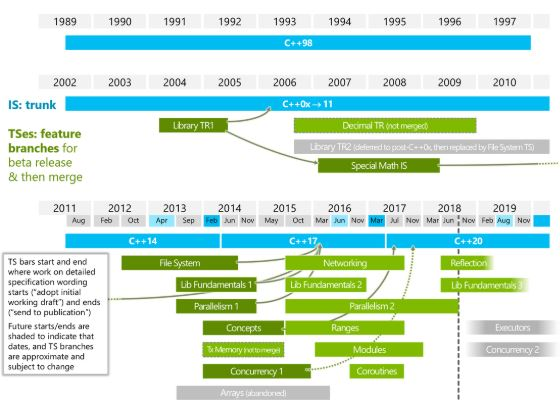
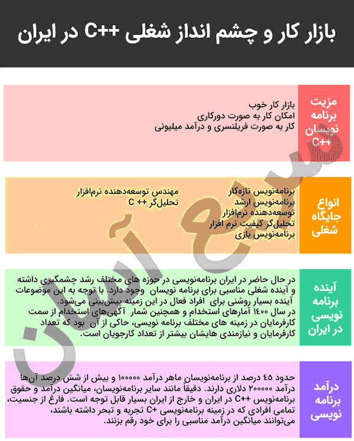

بر اساس شاخص انجمن برنامه نویسی TIOBE در سپتامبر 2020، C++ سریعترین زبان برنامه نویسی از لحاظ رشد است. این زبان برنامه نویسی همه منظوره و شی گرا توسط Bjarne Stroustrup در سال 1979 طراحی شد.
C++ پس از گذشت تقریبا چهار دهه از عمر خود، همچنان زبان مورد علاقه برنامه نویسان و توسعه دهندگان است. در این مقاله، به آنچه که C++ را تا این حد محبوب کرده است نگاه می کنیم و به کاربردهای اصلی این زبان می پردازیم.
برنامه نویسی ++C چیست؟
C++ یک نسخه پیشرفته و توسعه یافته از زبان برنامه نویسی C است که توسط Bjarne Stroustrup در سال 1979 توسعه یافت. این زبان در ابتداC with Classes نام داشت و بعدا به C++ تغییر نام داد. Bjarne Stroustrup از C برای ساخت آنچه می خواست استفاده کرد زیرا C یک زبان همه منظوره کارآمد و سریع بود.
C++ یک زبان برنامه نویسی پیچیده، کارآمد و همه منظوره است. این زبان برنامه نویسی برای برنامه نویسان سطح متوسط مناسب ترین گزینه ممکن است. با این حال، مبتدیانی که می خواهند سفر برنامه نویسی خود را با C++ شروع کنند نیز خیلی زود متوجه خواهند شد که می توانند به سرعت مفاهیم آن را بیاموزند.
رمز محبوبیت و رشد پایدار C++ چیست؟
C++ تقریبا در همه جا یافت می شود. حدود 4.4 میلیون توسعه دهنده در سراسر جهان از این زبان استفاده می کنند. بسیاری از سیستم های مدرن مانند موتورهای جستجو، برنامه های کاربردی VR، پایگاههای داده، سیستمعامل ها، مرورگرهای وب و حتی تولید فیلم ها از کد C++ پشتیبانی می کنند. محصولات Adobe، Unreal Engine، و مرورگرهای Chrome و Firefox با C++ ساخته شده اند. آخرین نسخه استاندارد C++20، زبان C++ را به سریع ترین زبان در حال رشد در جامعه توسعه دهندگان تبدیل کرده است.
با توجه به محبوبیت و ارتباط C++، این زبان حتی در سال 2022 هم ارزش یادگیری را دارد. C++ بازار کار بسیار مناسبی دارد و در صنایع مختلفی مانند امور مالی، توسعه برنامه ها، توسعه بازی، واقعیت مجازی و غیره استفاده می شود.
محبوب ترین کاربردC++ توسعه زیرساخت های نرم افزاری و برنامه های کاربردی گسترده است که با منابع محدود اجرا می شوند. C++ دارای توانایی منحصر به فردی برای دستکاری مستقیم سخت افزار یا ماشینی است که روی آن اجرا می شود. بنابراین، برنامه نویسان می توانند کد خود را برای اجرای کارآمد یک برنامه در هر محیطی، حتی با محدودیت فضای سخت افزاری یا انرژی، تنظیم کنند. چنین برنامه هایی به سرعت و بسیار کارآمد روی دستگاههای مختلف اجرا می شوند و C++ را به گزینه ای عالی برای چندین برنامه حیاتی تبدیل می کنند.
پیشینه و تاریخچه C++
C++ اولین بار در سال 1985 منتشر شد، اما اولین نسخه استاندارد آن (C++98) در سال 1998 انتشار پیدا کرد. در سال 2003، C++03، با هدف رفع اشکالات شناسایی شده در C++98 و اطمینان از اینکه زبان قابلیت حمل و سازگاری بیشتری دارد، منتشر شد.
ارتقاء عمده بعدی این زبان هشت سال بعد (2011) انجام شد و C++11 نام گرفت. پس از آن،C++14 منتشر شد و پیشرفت های ساده ای انجام داد و باگهای C++11 را رفع کرد. نسخه C++17 دارای چندین ویژگی جدید و کتابخانه استاندارد بسیار گسترده است و در نهایت نسخه فعلی که در سال 2020 منتشر شد C++20 نامیده می شود.

بر اساس گزارش JetBrains، استفاده از C++ در حال رشد است و کاربران همچنان به پذیرش استانداردهای جدید آن ادامه می دهند.
مزایای C++
C++ به عنوان یک زبان برنامه نویسی غنی از امکانات، مزایای زیادی را برای کاربران به ارمغان می آورد که نمی توان همه آنها را در محدوده این مقاله برشمرد. با این حال در زیر به برخی از مزایایی که باید به عنوان یک مبتدی، از آنها آگاه باشید اشاره خواهیم کرد:
- سرعت. زبان های برنامه نویسی سطح پایین بسیار سریعتر از زبان های برنامه نویسی سطح بالاتر مانند جاوا و پایتون هستند. از آنجایی که C++ نسخه توسعه یافته C است، یک زبان برنامه نویسی سطح پایین و یکی از سریع ترین زبان های برنامه نویسی موجود است.
- بهره وری. ++C دارای یک کتابخانه الگوی استاندار(STL) است که می تواند به طور گسترده هنگام کدنویسی استفاده شود. این کتابخانه ها الگوریتم های کارآمدی را ارائه می دهند که به برنامه نویس اجازه می دهد در زمان و انرژی خود صرفه جویی کند.
- آزادی در انتخاب سبک های برنامه نویسی. C++ از هفت سبک مختلف کدنویسی پشتیبانی می کند و این آن را به یک زبان برنامه نویسی چند پارادایم تبدیل می کند. به این ترتیب، می توانید سبکی را انتخاب کنید که متناسب با مورد استفاده شما باشد بدون اینکه نیازی به استفاده از اشیاء داشته باشید.
- توانایی تجزیه مسائل پیچیده به مجموعه های کوچکتر. C++ تا حدی یک زبان برنامه نویسی شی گرا است، به این معنی که می توانید مسائل پیچیده را به طور مستقیم با ایجاد اشیا حل کنید. علاوه بر این، توابع C++ به شما این امکان را می دهند که کد را به بلوک های منطقی تقسیم کنید که واضح هستند و فهم، آزمایش و تغییر آنها آسان است.
- امکان تشخیص خطاها قبل از اجرا. C++ به صورت ایستا تایپ می شود، به این معنی که کامپایلر در مورد آنچه برنامه نویس تایپ می کند، فرضیاتی ایجاد نمی کند. در نتیجه کامپایلر می تواند باگ ها و خطاها را قبل از اجرا پیدا کند و در طولانی مدت باعث صرفه جویی در زمان می شود.
کاربردهای عملی C++
در این بخش، هفت حوزه کاربردی برتر که از C++ استفاده می کنند را مورد بحث قرار می دهیم.
- سیستم عاملها
سیستم عاملهایی مانند Microsoft Windows، Apple Mac OS X،Symbian OS و حتی سیستم عامل های تلفن همراه مانند IOS با استفاده از C++ توسعه یافته اند. به طور کلی، سیستم عامل ها باید در مدیریت منابع سیستم سریع و کارآمد باشند. این واقعیت که C++ یک زبان برنامه نویسی پرسرعت با طیف گسترده ای از توابع در سطح سیستم است، آن را به یک انتخاب ایده آل برای نوشتن سیستم عامل تبدیل می کند.
C++ به دلیل نیاز به تجزیه و تحلیل برنامه های کاربردی توزیع شده سیستم عامل یونیکس، که اولین سیستم عاملی بود که با استفاده از زبان برنامه نویسی مانند C ساخته شد، توسعه یافت.
- بازی ها
C++ یکی از پرکاربردترین زبان های برنامه نویسی در ساخت بازی است. بازی هایی گرافیکی از C++ به عنوان بخش جدایی ناپذیری از ساختار خود استفاده می کنند.C++ می تواند به طور بهینه از منابع استفاده کند، شبکه چند نفره فراهم کند و برای نادیده گرفتن پیچیدگی های بازی های سه بعدی مناسب است.
C++ برای ساخت بازی های محبوبی مانند World of Warcraft، Counter-Strike، موتورهای بازی مانند Unreal Engine، و کنسولهای بازی مانند Xbox، PlayStation و Nintendo Switch استفاده شده است.
- برنامه های کاربردی مبتنی بر رابط کاربری گرافیکی
بسیاری از برنامه های کاربردی مبتنی بر رابط کاربری گرافیکی (GUI ) و دسکتاپ با استفاده از C++ توسعه یافته اند. برخی از نمونه ها، برنامه های سیستم های Adobe مانند Illustrator، Photoshop، و Win Amp Media Player از مایکروسافت هستند – که همگی با استفاده از C++ توسعه یافته اند.
- مرورگرهای وب
مرورگر وب فعلی شما احتمالا در C++ برنامه ریزی شده است. این زبان سرویسهایی که اطلاعات را از پایگاه داده بازیابی می کنند و کد را به صفحات وب تعاملی ترجمه می کنند، قدرت می دهد. با C++، مرورگرها می توانند با سرعت بالا و حداقل تأخیر کار کنند در نتیجه زمان زیادی طول نکشد که محتوا روی صفحه نمایش ما ظاهر شود.
C++ برای توسعه محبوب ترین مرورگرهای وب مورد استفاده امروزی مانند موارد زیر استفاده شده است:
- Internet Explorer
- Google Chrome
- Mozilla Firefox
- Safari
- Netscape Navigator
- Opera
- سیستم مدیریت پایگاه داده
ابزارهای محبوب مدیریت پایگاه داده مانند MySQL، Oracle، Postgres و MongoDB در C++ توسعه داده شده اند. MySQL محبوب ترین پایگاه داده منبع باز جهان است که توسط اکثر سازمان ها استفاده می شود. این پایگاه داده ها بخشی جدایی ناپذیری از برنامه های کاربردی اصلی ایجاد شده توسط غول هایی مانند گوگل، نتفلیکس، یوتیوب و ادوبی را تشکیل می دهند. ویژگی های C++ مانند مدیریت فایل، سرعت بالا، قابلیت اطمینان، توابع، کلاسها و اشیاء، آن را برای مدیریت داده ایدهآل می سازند.
- رایانش ابری و برنامه های کاربردی توزیع شده
C++ به یک انتخاب خودکار برای پیاده سازی سیستم های ذخیره سازی ابری تبدیل شده است زیرا به زبان سخت افزاری یا سطح ماشین نزدیک است. این زبان کاملا با ماشین آلات سازگار است. از این رو، شرکت های بزرگی که از محاسبات ابری و برنامه های کاربردی توزیع شده استفاده می کنند، از آن استفاده می کنند.
بلومبرگ یک برنامه RDBMS توزیع شده است که برای ارائه اخبار و اطلاعات مالی دقیق به سرمایه گذاران در زمان واقعی استفاده می شود. برای نوشتن محیط توسعه و کتابخانه های بلومبرگ از C++ استفاده شده است.
- کتابخانه ها
کتابخانه استاندارد C++ دارای طیف گسترده ای از توابع داخلی است. عملکرد و سرعت برای محاسبات ریاضی سطح بالا اهمیت دارند. بنابراین، اکثر کتابخانه ها از C++ به عنوان زبان برنامه نویسی اصلی خود استفاده می کنند. C++ یک کاندیدای ایده آل برای یک زبان برنامه نویسی backend است که کتابخانه ها را به چندین کتابخانه جدید و محبوب سطح بالا از جمله کتابخانه های زبان ماشین ارائه می دهد.
به عنوان مثالTensorFlow – یک کتابخانه قدرتمند، منبع باز و یادگیری ماشینی که توسط Brain Team of Google ایجاد شده است – با برنامه های C++ در backend توسعه یافته است.
چرا باید C++ را یاد بگیریم؟
اکنون که از برخی از موارد استفاده C++ به عنوان یک زبان برنامه نویسی آگاه هستید، می توانید در مورد یادگیری آن تصمیم بگیرید. اگر هنوز در مورد آن مطمئن نیستید، در ادامه به چند دلیل برای یادگیری آن اشاره خواهیم کرد:
- به شما در درک معماری کامپیوتر کمک می کند. از آنجایی که C++ یک زبان سطح پایین است که مستقیما با سخت افزار تعامل دارد، به شما این امکان را می دهد که نحوه عملکرد حافظه رایانه و ذخیره اطلاعات را بیاموزید.
- به طور گسترده استفاده می شود. C++ برای ساخت سیستم عامل ها، مرورگرها، بازی ها و برنامه های کاربردی شناخته شده مانند محصولات Adobe مانند Photoshop، فیس بوک، محصولات Autodesk و بسیاری موارد دیگر استفاده می شود. برخی معتقدندC++ آنقدر پرکاربرد است که غیر قابل تعویض است.
چشم انداز شغلی C++ (اینفوگرافیک)

با یادگیری برنامه نویسی C++، فرصت های شغلی عالی خواهید داشت. همچنین در حرفه های مبتنی بر زبان های برنامه نویسی مانند جاوا و پایتون (که تقاضای بیشتری نسبت به C++ دارند) یا مشاغل مبتنی بر توسعه front-end، back-end و full-stackهم با C++ بسیار موفق ترخواهید بود. علاوه بر اینها، در حوزه های توسعه مانند تست نرم افزار از شما انتظار می رود با C++آشنایی داشته باشید.
حقوق بالقوه ای که می توانید پس از یادگیری این زبان دریافت کنید به سطح مهارت، موقعیت جغرافیایی، کارفرما، اینکه آیا به عنوان فریلنسر کار می کنید و عوامل دیگر بستگی دارد.
نحوه پیدا کردن موقعیت شغلی مرتبط با C++
اگرچه C++ زبان ساده ای برای یادگیری نیست، اما دامنه برنامه هایی که می توان با استفاده از این زبان توسعه داد، چشمگیر است. سوال این است که برای داشتن یک شغل در این زمینه چقدر باید در آن تخصص داشته باشید؟ در پاسخ می توان گفت همیشه چیزهای بیشتری برای یادگیری وجود دارند – مهم نیست که مبتدی هستید یا متخصص با 20 سال تجربه برنامه نویسی. هر چه دانش و مهارت بیشتری داشته باشید، احتمال اینکه در نهایت شغل بهتری پیدا کنید بیشتر می شود.
چشم اندازهای شغلی زبان C++ روشن است و راه های مختلفی برای افراد حرفه ای وجود دارد. مانند:
- برنامه نویس مبتدی
- برنامه نویس ارشد
- توسعه دهنده نرم افزار
- مهندس نرم افزار
- تحلیلگر کیفیت
- برنامه نویس بازی
- تحلیلگر C++
- معمار برنامه نویسی
- توسعه دهنده Backend
- توسعه دهنده پایگاه داده
غول های صنعتی مانند گوگل، آمازون، فلیپ کارت، اچ پی، آی بی ام، اینتل، مایکروسافت، اینفوسیس، سان مایکروسیستمز و غیره متخصصان C++ را استخدام می کنند. بنابراین، اگر مهارت های مناسبی داشته باشید، موقعیت شغلی کم نیست.
توسعه دهندگانC++ بسیار مورد تقاضا هستند و می تواند به مشاغل پردرآمد دست پیدا کنند. میانگین دستمزد پایه یک توسعه دهنده C++ حدود 103035 دلار در سال است. با این حال، میزان درآمدی که به عنوان یک برنامه نویس به دست می آورید، به مهارت، صلاحیت ها و تخصص شما بستگی دارد.
نکات مفید و چیزهای دیگری که باید در نظر داشته باشید
با هر یک از این رویکردها (خودآموزی یا آموزش از طریق مربی)، باید چندین کتاب C++ را مرور کنید تا بتوانید آنچه یاد می گیرید را درک کنید. در ادامه به چند نکته که هنگام شروع سفر خود باید به خاطر داشته باشید اشاره می کنیم:
1- شما باید تعهد بلند مدت داشته باشید. مقدار زمان و انرژی لازم برای یادگیری C++ بسته به سطح تعهد شما متفاوت خواهد بود. بسته به موقعیت فعلی و تجربیات قبلی، زمان لازم برای یادگیری متفاوت است. در هر صورت، انتظار نداشته باشید که C++ را در یک هفته به طور کامل یاد بگیرید.
2- شما باید هوشمندانه پیش بروید. چیزهای زیادی برای یادگیری وجود دارد، و گذراندن اصول اولیه C++ ممکن است طاقت فرسا باشد. به این ترتیب، باید برای درک اصول اولیه وقت بگذارید و از همتایان و برنامه نویسان با تجربه تر کمک بگیرید.
3- دستورالعمل ها و استانداردهای C++ را دنبال کنید. توصیه می شود روی قوانین ساده ای تمرکز کنید که به شما کمک می کنند کار را به طور موثر انجام دهید.
4- تمرین، تمرین و تمرین بیشتر. فارغ از هر رویکردی که برای یادگیری استفاده می کنید، وقت گذاشتن برای به کارگیری آموخته هایتان بهترین راه برای دانستن این است که آنچه را که یاد گرفته اید درک کرده اید یا نه.
5- چه برنامه های خود را بنویسد و چه سعی کنید کد دیگران را اصلاح کنید، زمانی که سعی می کنید مشکلات را برطرف کنید بیشترین چیزها را یاد می گیرید، زیرا مجبور هستید به مطالب مختلفی که یاد گرفته اید رجوع کنید.
6- کدهای C++ افراد مختلف را بخوانید و سبک های مختلف کدنویسی را یاد بگیرید. یادگیری به تنهایی می تواند شما را از دستیابی به ایده های جدید باز دارد و به راه های ساده تر برای انجام آنچه آموخته اید سوق دهد.
7- به یک انجمن بپیوندید و در کنفرانس ها شرکت کنید. انجمنهای مفید زیادی وجود دارند که می توانید به آنها ملحق شوید. این کار می تواند به شما در سفر یادگیری C++ کمک کنند Codechef، StackOverflow و CodeProject نمونه هایی از انجمن های موجود هستند.
اکنون که با طیف گسترده ای از برنامه های C++ آشنا شده اید، وقت بگذارید و چشم اندازهای شغلی C++ که در این مقاله به آنها اشاره کردیم را بررسی کنید و تصمیم خود را برای شروع مسیر درست اتخاذ کنید.